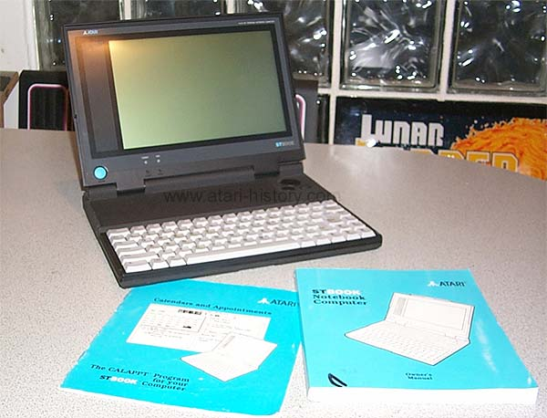
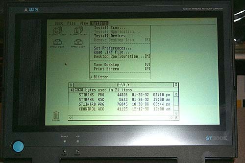
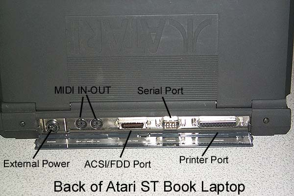
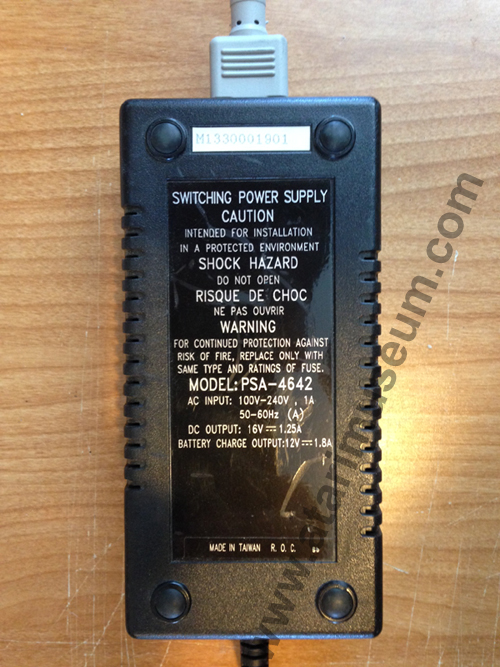

After the success of the Atari STacy laptop Atari went back to work on
a new and improved version of its portable ST. The STBook
is a marvelous computer, designed by Tracey Hall who is also responsible
for the STPad tablet computer. Its LCD screen is not backlite,
but produces a crisp clean picture, however still can be difficult
view at times. The LCD screen was an Epson Custom Module (ECM)
and it's very delicate and nearly impossible to locate.
The STBook weighs in at just under 5lbs which is amazing for all the technology
that was packed onboard, todays laptops have just reached the sub-5lb mark
so this goes to show how far ahead Atari was. The laptop
has a fixed memory configuration of either 1MB or 4MB and does not have
provisions for adding additional memory internally, however additional
memory may have possibly been added external through its external processor
bus on the side of the unit. The hard drive is 40mb's.
The keyboard is quite comfortable and easy to use. The mouse
is an interesting item, its a pressure sensitive pad which you push in
the direction you wish the point to move, the harder you push the faster
the mouse moves, 2 buttons are located for clicking and selecting objects.
Although this pointer was quite innovative, it is difficult to use and
needed quite a bit of improvement, the mouse pad controller module is removable
for replacement with alternative mouse controllers.
The
are no external ports for a mouse or keyboard so you have to use what you
have. The unit has an external bus connector for perhaps a
future docking station that may have been thought of. Other
ports consist of parallel and serial as well as the famous Atari ST MIDI
ports, and also included is an ACSI/Floppy port for external hard drives
and an external 3.5" floppy drive, sorry no PCMCIA ports here and also
no external video as well. Serial null modem software
for an STBook is included to allow data transfers to and from your
desktop ST if you choose not to purchase the floppy disk. The
CPU is a standard 8mhz 68000 processor. These laptops
are sleek and sexy, light and easy to work with, however they are extremely
fragile, the case plastic can crack easily and the LCD panel can easily
be damaged. Although some STBooks were sent to musicians for
advanced previews here in the United States non were sold.
In Europe about 1000 units were shipped to a small number of distributors,
however the rechargable batteries were not shipped and the STBooks in Europe
had to rely on 6 AA sized battery's installed in a battery pak.
Power gets used up quite quickly in these laptops so you need to keep the
power supply close at hand. In short, the STBooks were
quite advanced and ahead of their time in size and performance, but needed
some more improvement to make them more sturdy for the comsumer market.
Atari definitely had a winner on its hands with this laptop computer.
